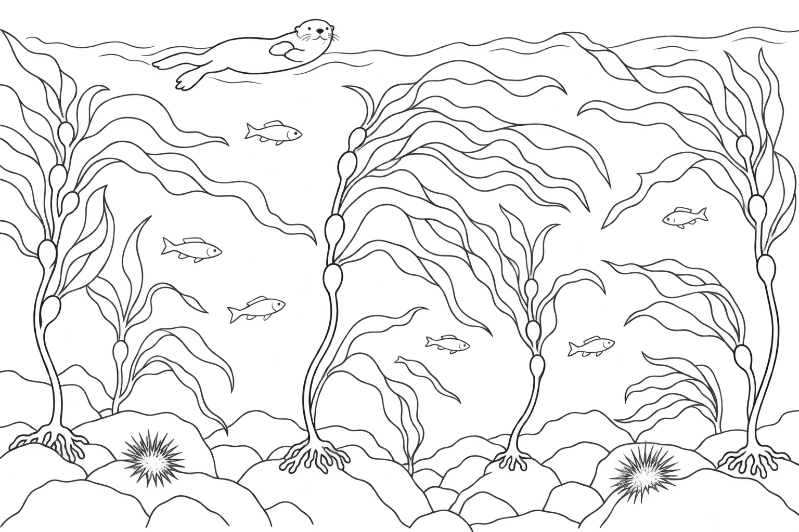

Life in the forest
What do you notice?
Look closer. Follow the relationships. Make sense of what changes.
Capture what you notice as you watch.
What do you notice?
How do they affect kelp differently?
What might happen next?
What do you want to investigate?
Complete the chain. What did the game show you?
What could help the forest recover?
What did you discover? Write one idea that changed how you think about kelp forests.
Draw and colour a healthy kelp forest. Add ideas around it, then connect them with labelled lines.

A healthy kelp forestOur action: We would __________________ because it would help __________________ and __________________.